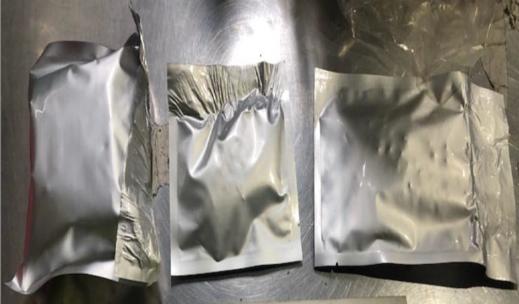
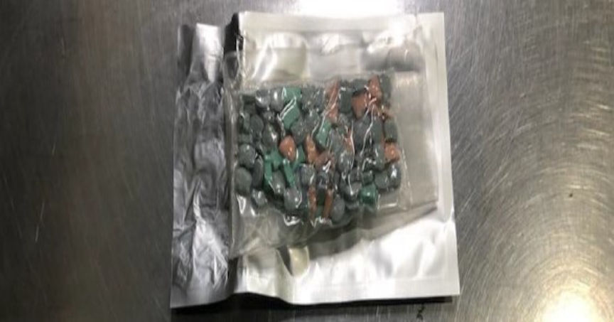
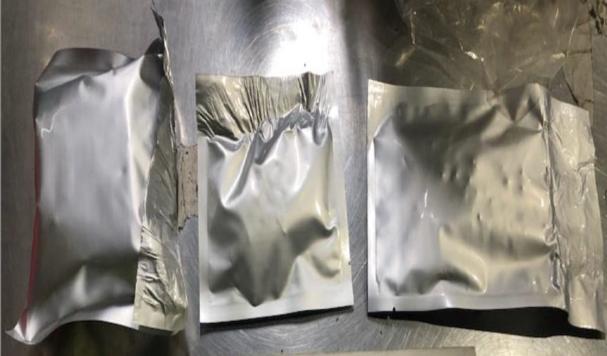
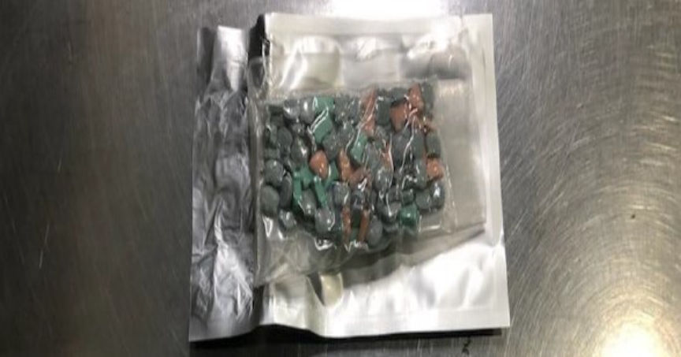

Australian Man Charged for Purchasing Drugs on the Dark Web
A New South Wales man was charged for attempting to import and resell a variety of drugs purchased through the dark web.

According to the Australian Federal Police (AFP), the 23-year-old defendant purchased a wide variety of drugs including MDMA, methamphetamine, oxycodone, and heroin from a dark web vendor based in the UK and had them shipped to a residence in Western Sydney.
Investigations that resulted in the defendant's arrest began in May 2023 after the Australian Border Force (ABF) intercepted three incoming packages.
In the first package, the officers reportedly found and seized 133 tablets of MDMA, 100 oxycodone pills, and 97 pills of an analogue of the synthetic opioid, Nitazene.
In the other two packages, the officers found a total of 60 grams of MDMA, 25 grams of ketamine, 15 grams of methamphetamine, and 14 grams of heroin. The drugs were reportedly hidden in items such as cookware, and toy cars.

On May 19 AFP investigators executed a search warrant at the packages' intended destination, after receiving information from the ABF. The investigators found a kitchen scale, spoons with white residue, zip-lock bags, and a fake ID.
The investigators allegedly established that the defendant was in constant contact with two suspects based in the UK via encrypted communication platforms. The trio allegedly discussed the import and resale of illicit drugs in Australia.
The 23-year-old was charged with one count of attempting to import a marketable quantity of border-controlled drugs. He faces a maximum sentence of 25 years in prison.

Some of the seized drugs
According to the Australian Federal Police (AFP), the 23-year-old defendant purchased a wide variety of drugs including MDMA, methamphetamine, oxycodone, and heroin from a dark web vendor based in the UK and had them shipped to a residence in Western Sydney.
Investigations that resulted in the defendant's arrest began in May 2023 after the Australian Border Force (ABF) intercepted three incoming packages.
In the first package, the officers reportedly found and seized 133 tablets of MDMA, 100 oxycodone pills, and 97 pills of an analogue of the synthetic opioid, Nitazene.
In the other two packages, the officers found a total of 60 grams of MDMA, 25 grams of ketamine, 15 grams of methamphetamine, and 14 grams of heroin. The drugs were reportedly hidden in items such as cookware, and toy cars.

Some of the seized drugs
Quote:ABF Superintendent Asha Patwardhan
Officer training and intuition are key pillars in being able to detect illicit substances at our border, no matter how sophisticated the concealment method may be.
On May 19 AFP investigators executed a search warrant at the packages' intended destination, after receiving information from the ABF. The investigators found a kitchen scale, spoons with white residue, zip-lock bags, and a fake ID.
The investigators allegedly established that the defendant was in constant contact with two suspects based in the UK via encrypted communication platforms. The trio allegedly discussed the import and resale of illicit drugs in Australia.
The 23-year-old was charged with one count of attempting to import a marketable quantity of border-controlled drugs. He faces a maximum sentence of 25 years in prison.